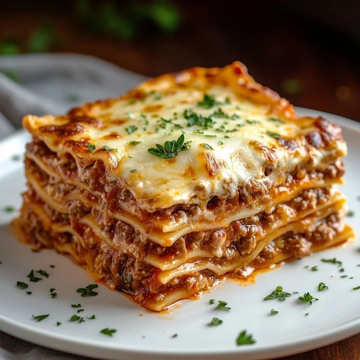

Odin Lasagna Recipe

Description
This is a wonderfully rich, cheesy and a hearty traditional lasagna. Perfect for feeding a large family!
Ingridients
- 1 lb minced meat
- 1 chopped onion
- 2 garlic
- 1 crushed tomatoes
- 2 cans tomato paste
- 9 lasagna noodles
- 15 oz ricotta cheese
- 1 large egg
- 2 cups shredded mozzarella cheese
- 1/2 cup grated Parmesan cheese
- Salt, pepper and italian seasoning to taste
Steps
- Bring a large pot of lightly salted water toa boil. Cook lasagna noodles in boiling water for 8 to 10 minutes. Drain and set aside.
- In a skillet, cook mincd meat, onion and garlic over medium heat until well browned. stir in crushed tomatoes and tomato paste. Season with salt, pepper and Italian seasoning. Simmer for 30 minutes./li>
- In a mixing bowl, combine ricotta cheese, egg and salt
- Preheat your ovento 375°F (190°C.
- Assemble the lasagna in a 9x13 inch baking dish by layering meat sauce,noodles, ricotta mixture and mozarella cheese. Repeat the layers until ingridents are used up, ending with mozarella and Parmesan on top.
- Bake in the preheated oven for 25 minutes or until the cheese is golden brown and bubbly. Let it cool before serving.
Home